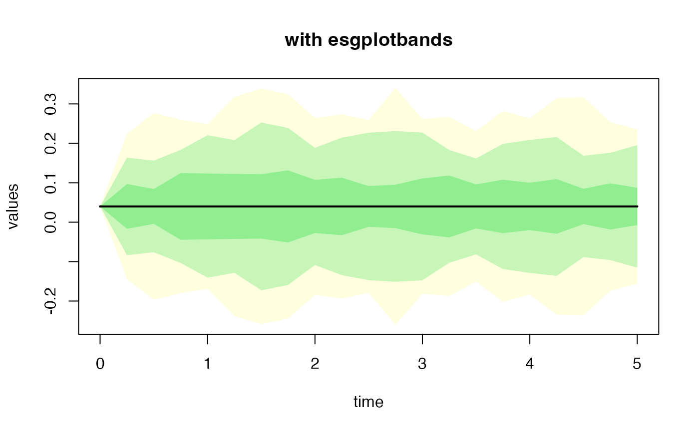
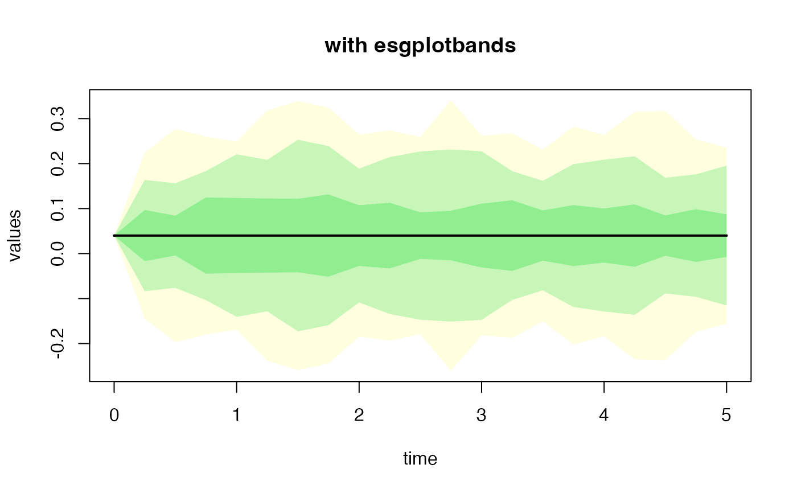
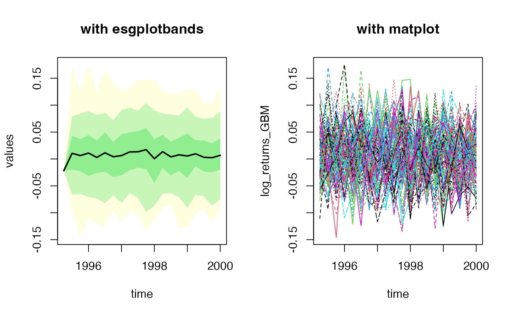
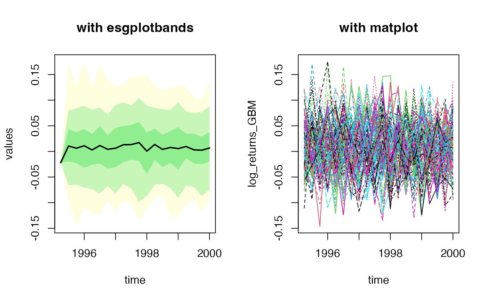

This function makes simulations of diffusion processes, that are building blocks for various risk factors' models.
simdiff(
n,
horizon,
frequency = c("annual", "semi-annual", "quarterly", "monthly", "weekly", "daily"),
model = c("GBM", "CIR", "OU"),
x0,
theta1 = NULL,
theta2 = NULL,
theta3 = NULL,
lambda = NULL,
mu_z = NULL,
sigma_z = NULL,
p = NULL,
eta_up = NULL,
eta_down = NULL,
eps = NULL,
start = NULL,
seed = 123
)Arguments
- n
number of independent observations.
- horizon
horizon of projection.
- frequency
either "annual", "semi-annual", "quarterly", "monthly", "weekly", or "daily" (1, 1/2, 1/4, 1/12, 1/52, 1/252).
- model
either Geometric Brownian motion-like (
"GBM"), Cox-Ingersoll-Ross ("CIR"), or Ornstein-Uhlenbeck ("OU").GBM-like (GBM, Merton, Kou, Heston, Bates)
$$dX_t = \theta_1(t) X_t dt + \theta_2(t) X_t dW_t + X_t JdN_t$$
CIR
$$dX_t = (\theta_1 - \theta_2 X_t) dt + \theta_3\sqrt(X_t) dW_t$$
Ornstein-Uhlenbeck $$dX_t = (\theta_1 - \theta_2 X_t)dt + \theta_3 dW_t$$
Where \((W_t)_t\) is a standard brownian motion :
$$dW_t ~~ \epsilon \sqrt(dt)$$
and $$\epsilon ~~ N(0, 1)$$
The \(\epsilon\) is a gaussian increment that can be an output from
simshocks.For 'GBM-like', \(\theta_1\) and \(\theta_2\) can be held constant, and the jumps part \(JdN_t\) is optional. In case the jumps are used, they arise following a Poisson process \((N_t)\), with intensities \(J\) drawn either from lognormal or asymmetric double-exponential distribution.
- x0
starting value of the process.
- theta1
a
numericformodel = "GBM",model = "CIR",model = "OU". Can also be a time series object (an output fromsimdiffwith the same number of scenarios, horizon and frequency) formodel = "GBM", and time-varying parameters.- theta2
a
numericformodel = "GBM",model = "CIR",model = "OU". Can also be a time series object (an output fromsimdiffwith the same number of scenarios, horizon and frequency) formodel = "GBM", and time-varying parameters.- theta3
a
numeric, volatility formodel = "CIR"andmodel = "OU".- lambda
intensity of the Poisson process counting the jumps. Optional.
- mu_z
mean parameter for the lognormal jumps size. Optional.
- sigma_z
standard deviation parameter for the lognormal jumps size. Optional.
- p
probability of positive jumps. Must belong to ]0, 1[. Optional.
- eta_up
mean of positive jumps in Kou's model. Must belong to ]0, 1[. Optional.
- eta_down
mean of negative jumps. Must belong to ]0, 1[. Optional.
- eps
gaussian shocks. If not provided, independent shocks are generated internally by the function. Otherwise, for custom shocks, must be an output from
simshocks.- start
the time of the first observation. Either a single number or a vector of two numbers (the second of which is an integer), which specify a natural time unit and a (1-based) number of samples into the time unit. See `?ts`.
- seed
reproducibility seed
Value
a time series object.
References
Black, F., Scholes, M.S. (1973) The pricing of options and corporate liabilities, Journal of Political Economy, 81, 637-654.
Cox, J.C., Ingersoll, J.E., Ross, S.A. (1985) A theory of the term structure of interest rates, Econometrica, 53, 385-408.
Iacus, S. M. (2009). Simulation and inference for stochastic differential equations: with R examples (Vol. 1). Springer.
Glasserman, P. (2004). Monte Carlo methods in financial engineering (Vol. 53). Springer.
Kou S, (2002), A jump diffusion model for option pricing, Management Sci- ence Vol. 48, 1086-1101.
Merton, R. C. (1976). Option pricing when underlying stock returns are discontinuous. Journal of financial economics, 3(1), 125-144.
Uhlenbeck, G. E., Ornstein, L. S. (1930) On the theory of Brownian motion, Phys. Rev., 36, 823-841.
Vasicek, O. (1977) An Equilibrium Characterization of the Term Structure, Journal of Financial Economics, 5, 177-188.
Examples
kappa <- 1.5
V0 <- theta <- 0.04
sigma_v <- 0.2
theta1 <- kappa*theta
theta2 <- kappa
theta3 <- sigma_v
# OU
sim.OU <- simdiff(n = 10, horizon = 5,
frequency = "quart",
model = "OU",
x0 = V0, theta1 = theta1, theta2 = theta2, theta3 = theta3)
head(sim.OU)
#> Series 1 Series 2 Series 3 Series 4 Series 5 Series 6
#> [1,] 0.040000000 0.04000000 0.04000000 0.040000000 0.04000000 0.040000000
#> [2,] -0.007010219 -0.04956433 -0.01826895 0.071842481 0.04048347 -0.019585761
#> [3,] -0.011615890 -0.03983938 -0.01748681 0.019752326 0.07264790 0.020593615
#> [4,] 0.135262514 -0.10092946 -0.10564592 -0.001863971 0.03134923 0.005970775
#> [5,] 0.111386836 -0.11799548 0.12182156 -0.074206258 0.08810187 -0.012538258
#> [6,] 0.099907491 -0.12101413 0.19755359 -0.128389846 0.05456646 -0.075926539
#> Series 7 Series 8 Series 9 Series 10
#> [1,] 0.04000000 0.04000000 0.04000000 0.04000000
#> [2,] 0.04986768 0.09886257 0.12829678 -0.04918709
#> [3,] -0.03268803 0.05846365 0.01268510 0.08465305
#> [4,] -0.05110350 -0.07917464 -0.08446948 0.04136244
#> [5,] -0.04409434 -0.16895107 0.22629756 -0.03165900
#> [6,] 0.13685786 -0.23793961 0.13307614 -0.02906855
#par(mfrow=c(2,1))
esgplotbands(sim.OU, xlab = "time", ylab = "values", main = "with esgplotbands")
 matplot(as.vector(time(sim.OU)), sim.OU, type = 'l', main = "with matplot")
# OU with simulated shocks (check the dimensions)
eps0 <- simshocks(n = 50, horizon = 5, frequency = "quart", method = "anti")
sim.OU <- simdiff(n = 50, horizon = 5, frequency = "quart",
model = "OU",
x0 = V0, theta1 = theta1, theta2 = theta2, theta3 = theta3,
eps = eps0)
#par(mfrow=c(2,1))
esgplotbands(sim.OU, xlab = "time", ylab = "values", main = "with esgplotbands")

matplot(as.vector(time(sim.OU)), sim.OU, type = 'l', main = "with matplot")
# a different plot
esgplotts(sim.OU)
#> Warning: Use of `meltdf$value` is discouraged.
#> ℹ Use `value` instead.
matplot(as.vector(time(sim.OU)), sim.OU, type = 'l', main = "with matplot")
# OU with simulated shocks (check the dimensions)
eps0 <- simshocks(n = 50, horizon = 5, frequency = "quart", method = "anti")
sim.OU <- simdiff(n = 50, horizon = 5, frequency = "quart",
model = "OU",
x0 = V0, theta1 = theta1, theta2 = theta2, theta3 = theta3,
eps = eps0)
#par(mfrow=c(2,1))
esgplotbands(sim.OU, xlab = "time", ylab = "values", main = "with esgplotbands")

matplot(as.vector(time(sim.OU)), sim.OU, type = 'l', main = "with matplot")
# a different plot
esgplotts(sim.OU)
#> Warning: Use of `meltdf$value` is discouraged.
#> ℹ Use `value` instead.
 # CIR
sim.CIR <- simdiff(n = 50, horizon = 5,
frequency = "quart",
model = "CIR",
x0 = V0, theta1 = theta1, theta2 = theta2, theta3 = 0.05)
esgplotbands(sim.CIR, xlab = "time", ylab = "values", main = "with esgplotbands")
# CIR
sim.CIR <- simdiff(n = 50, horizon = 5,
frequency = "quart",
model = "CIR",
x0 = V0, theta1 = theta1, theta2 = theta2, theta3 = 0.05)
esgplotbands(sim.CIR, xlab = "time", ylab = "values", main = "with esgplotbands")
 matplot(as.vector(time(sim.CIR)), sim.CIR, type = 'l', main = "with matplot")
matplot(as.vector(time(sim.CIR)), sim.CIR, type = 'l', main = "with matplot")
 # GBM
eps0 <- simshocks(n = 100, horizon = 5, frequency = "quart")
sim.GBM <- simdiff(n = 100, horizon = 5, frequency = "quart",
model = "GBM",
x0 = 100, theta1 = 0.03, theta2 = 0.1,
eps = eps0)
esgplotbands(sim.GBM, xlab = "time", ylab = "values", main = "with esgplotbands")
# GBM
eps0 <- simshocks(n = 100, horizon = 5, frequency = "quart")
sim.GBM <- simdiff(n = 100, horizon = 5, frequency = "quart",
model = "GBM",
x0 = 100, theta1 = 0.03, theta2 = 0.1,
eps = eps0)
esgplotbands(sim.GBM, xlab = "time", ylab = "values", main = "with esgplotbands")
 matplot(as.vector(time(sim.GBM)), sim.GBM, type = 'l', main = "with matplot")
matplot(as.vector(time(sim.GBM)), sim.GBM, type = 'l', main = "with matplot")
 eps0 <- simshocks(n = 100, horizon = 5, frequency = "quart")
sim.GBM <- simdiff(n = 100, horizon = 5, frequency = "quart",
model = "GBM",
x0 = 100, theta1 = 0.03, theta2 = 0.1,
eps = eps0)
esgplotbands(sim.GBM, xlab = "time", ylab = "values", main = "with esgplotbands")
eps0 <- simshocks(n = 100, horizon = 5, frequency = "quart")
sim.GBM <- simdiff(n = 100, horizon = 5, frequency = "quart",
model = "GBM",
x0 = 100, theta1 = 0.03, theta2 = 0.1,
eps = eps0)
esgplotbands(sim.GBM, xlab = "time", ylab = "values", main = "with esgplotbands")
 matplot(as.vector(time(sim.GBM)), sim.GBM, type = 'l', main = "with matplot")
matplot(as.vector(time(sim.GBM)), sim.GBM, type = 'l', main = "with matplot")
 # GBM log returns (haha) with starting date
eps0 <- simshocks(n = 100, horizon = 5, frequency = "quart", start = c(1995, 1))
sim.GBM <- simdiff(n = 100, horizon = 5, frequency = "quart",
model = "GBM",
x0 = 100, theta1 = 0.03, theta2 = 0.1,
eps = eps0, start = c(1995, 1))
log_returns_GBM <- calculatereturns(sim.GBM, type = "log")
par(mfrow=c(1, 2))
esgplotbands(log_returns_GBM , xlab = "time", ylab = "values", main = "with esgplotbands")
matplot(as.vector(time(log_returns_GBM)), log_returns_GBM, type = 'l',
main = "with matplot", xlab = "time")

# GBM log returns (haha) with starting date
eps0 <- simshocks(n = 100, horizon = 5, frequency = "quart", start = c(1995, 1))
sim.GBM <- simdiff(n = 100, horizon = 5, frequency = "quart",
model = "GBM",
x0 = 100, theta1 = 0.03, theta2 = 0.1,
eps = eps0, start = c(1995, 1))
log_returns_GBM <- calculatereturns(sim.GBM, type = "log")
par(mfrow=c(1, 2))
esgplotbands(log_returns_GBM , xlab = "time", ylab = "values", main = "with esgplotbands")
matplot(as.vector(time(log_returns_GBM)), log_returns_GBM, type = 'l',
main = "with matplot", xlab = "time")
